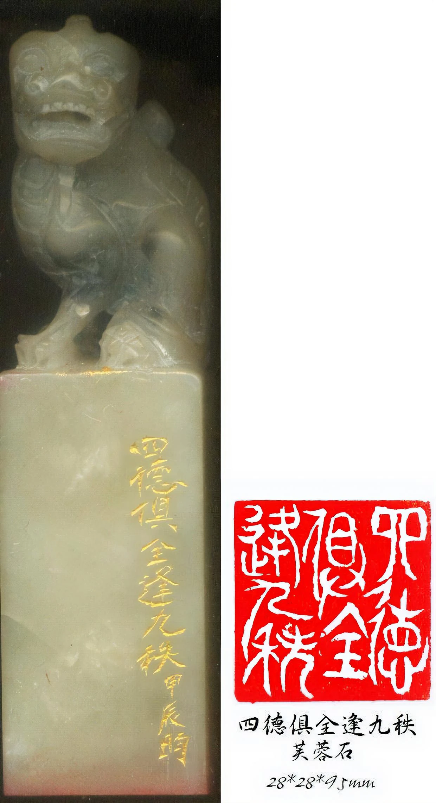

林政毅，字昀林，號老人家。以刀為筆，以石為紙，於方寸之間經營漢篆之美。

林政毅，字昀林，號老人家，出生於雲林縣，現居新北永和。
民國91年下旬執刀學印，啟蒙於九如軒張輝亮老師，復經老師推薦，轉入晉南軒朱清波老師門下，習藝六載。
擅長細朱小篆，講究刀筆相生、分朱布白，於線條的剛柔與章法的虛實之間，反覆琢磨一方印章的呼吸。
啟蒙於九如軒張輝亮老師，自此與金石結緣，從握刀、識石、臨漢印開始打底。
經張輝亮老師推薦，轉赴晉南軒朱清波老師門下，正式入室，鑽研章法與刀法前後長達六年。
由漢入細朱，講究線條圓勁、佈白勻淨，於閒章、名號章與文人雅趣之間，尋求一方印的完整生命。
下列為邊款原石與朱砂拓影並陳的創作，包含芙蓉石、巴林石等印材，點擊圖片可放大檢視。
歡迎預約欣賞作品、訂刻閒章、名號章與書畫用印。以刀石會友，靜候雅教。
昀林篆刻金石